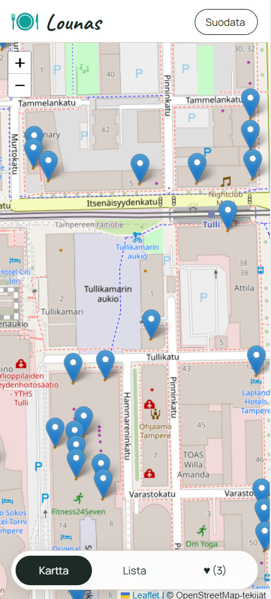
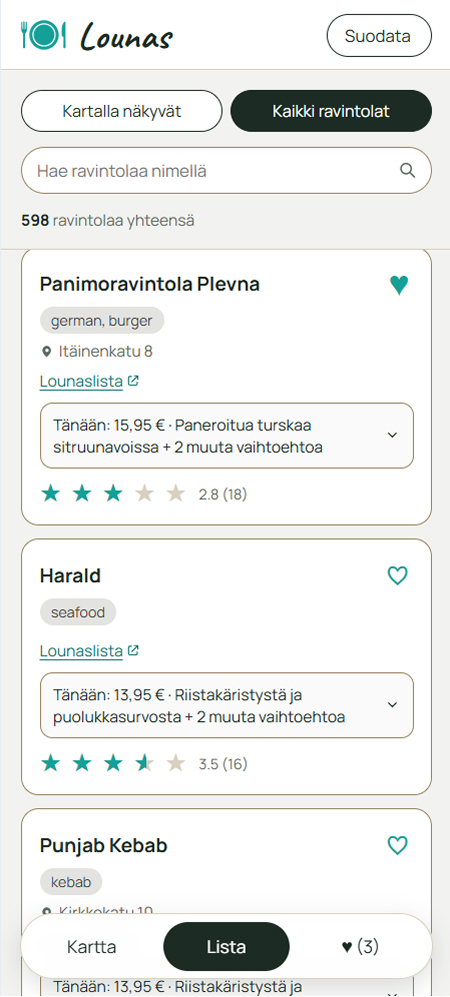
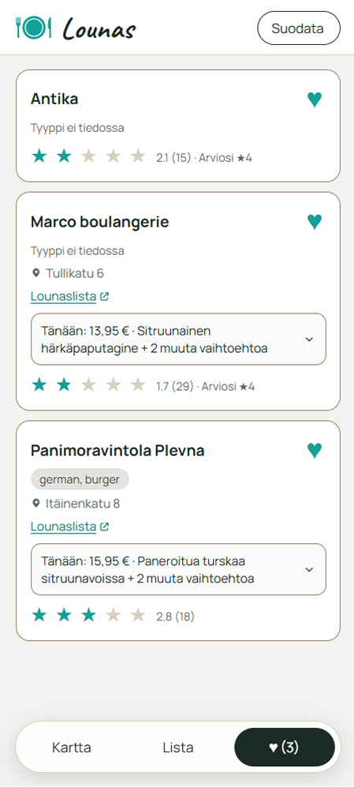
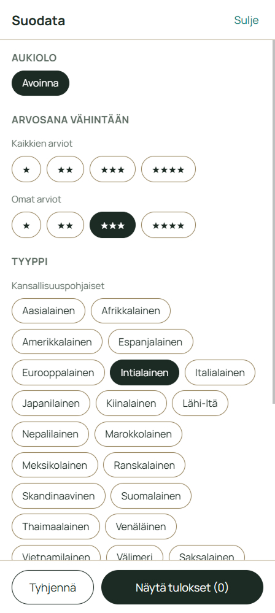
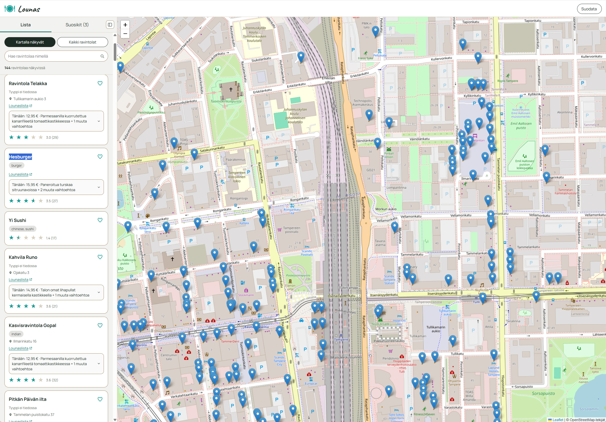
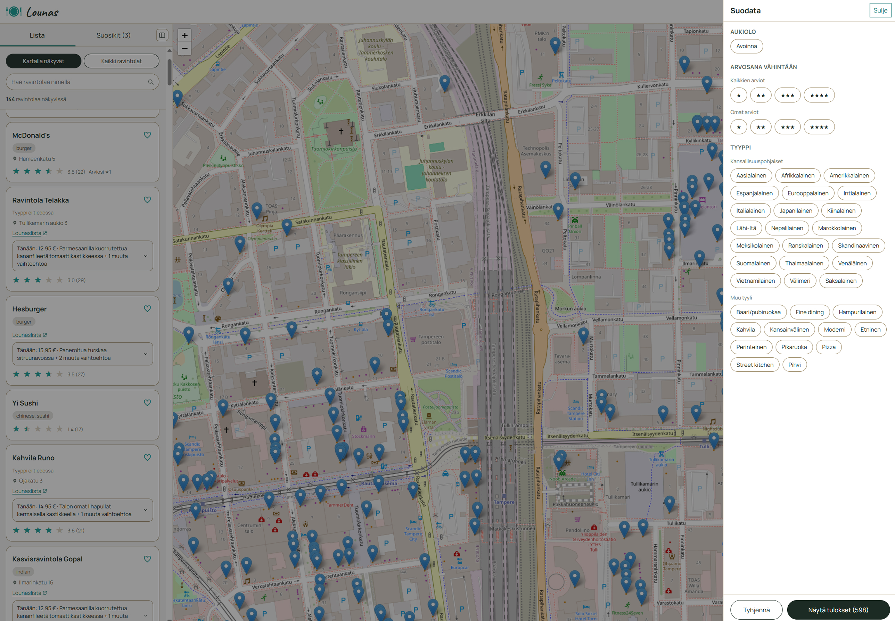

Nopea tapa löytää päivän lounas ja suosikkiravintolat lähialueelta
Lounas-sovellus
Lounas on itsenäisesti konseptoimani ja prototyypiksi asti rakentamani sovellus, joka auttaa löytämään lähialueen lounasravintolat kartalta ja listalta nopeasti, suodattamaan niitä tarpeen mukaan sekä tallentamaan ja arvioimaan omia suosikkeja. Sovellus on rajattu demomielessä Tampereen ravintolatarjontaan.
- Suunniteltu, tutkittu ja toteutettu itsenäisesti konseptista toimivaksi klikattavaksi prototyypiksi.
- Toteutettu aluksi mobiilisovelluksena, ja laajennettu sittemmin myös työpöytäkäyttöön mobile first -periaatteella.
- Sovellukselle tehty käytettävyystestausta, ja käyttöliittymää parannettu löydösten pohjalta.
- Kokeile sovellusta
Haaste
Lounastauolla halutaan usein tietää nopeasti, mitä lähialueen ravintoloissa on tarjolla juuri sinä päivänä — mutta tähän tarkoitukseen ei ole Suomessa omaa, ajantasaista sovellusta.
- Eat.fi on vanhentunut, ja sekä sen käyttökokemus että ravintoladata ovat heikolla tasolla. Google Mapsin kaltaiset yleiskarttasovellukset eivät näytä ravintoloiden lounastarjontaa käyttäjäystävällisesti.
- Lounastarjontaa on paljon: välillä halutaan kokeilla jotain uutta, välillä palata tuttuun ja hyväksi havaittuun suosikkiin.
- Käyttäjät haluavat myös nähdä, mistä ravintoloista muut ovat pitäneet, tallentaa omat suosikkinsa muistiin ja arvioida ravintoloita nopeasti ilman ylimääräistä vaivaa.
Ratkaisu ja lähestymistapani
Lähdin liikkeelle todellisesta käyttäjätarpeesta ja rakensin konseptia iteratiivisesti kohti toimivaa prototyyppiä.
- Käyttäjätutkimusta haastattelemalla tamperelaisia toimistotyöntekijöitä, jotka käyvät usein lounaalla ja etsivät sekä uusia ravintoloita että vanhoja suosikkipaikkoja.
- Konseptin ja käyttöliittymän suunnittelu: karttanäkymä ja listanäkymä, monipuoliset suodattimet (tyyppi, arvosana, aukiolo), suosikit ja nopea arvostelu.
- Mobile first -lähestymistapa: käyttöliittymä suunniteltiin ja toteutettiin ensin mobiilille, minkä jälkeen sama looginen rakenne laajennettiin responsiivisesti myös työpöytäkäyttöön — mm. pysyvä sivupalkki ja täysin erillinen suodatinpaneeli suuremmille näytöille.
- Käytettävyystestausta prototyypillä oikeiden käyttäjien kanssa, ja löydösten pohjalta tehtyjä parannuksia niin toiminnallisuuteen kuin käyttöliittymän yksityiskohtiin.
- Avoimen datan (OpenStreetMap) hyödyntäminen ravintola- ja sijaintitietojen pohjana kaupallisten karttapalveluiden sijaan.
Lopputulos

Selkeä ja nopeakäyttöinen konsepti
Toimiva prototyyppi, joka näyttää lähialueen ravintolat kartalla ja listassa, suodattaa niitä tyypin, arvosanan ja aukiolon perusteella, ja tallentaa käyttäjän suosikit talteen.
Konseptia voi kokeilla julkaistuna prototyyppinä, jossa ravintolat ja niiden sijainnit haetaan suoraan OpenStreetMapista. Demossa käytetään OpenStreetMapin avointa dataa ravintoloista ja sijainneista, sekä fiktiivistä päivän lounaslistadataa — oikeiden ravintoloiden lounaslistojen automaattinen haku vaatisi oman taustapalvelun, mikä ei ole tämän demon teknisten rajoitusten puitteissa mahdollista.

Oikeiden käyttäjien tarpeisiin pohjautuva
Ratkaisut perustuvat lounastajien haastatteluihin ja käytettävyystestauksen löydöksiin, ei oletuksiin siitä mitä käyttäjä haluaa..
Työnäytteitä






← Portfolioon